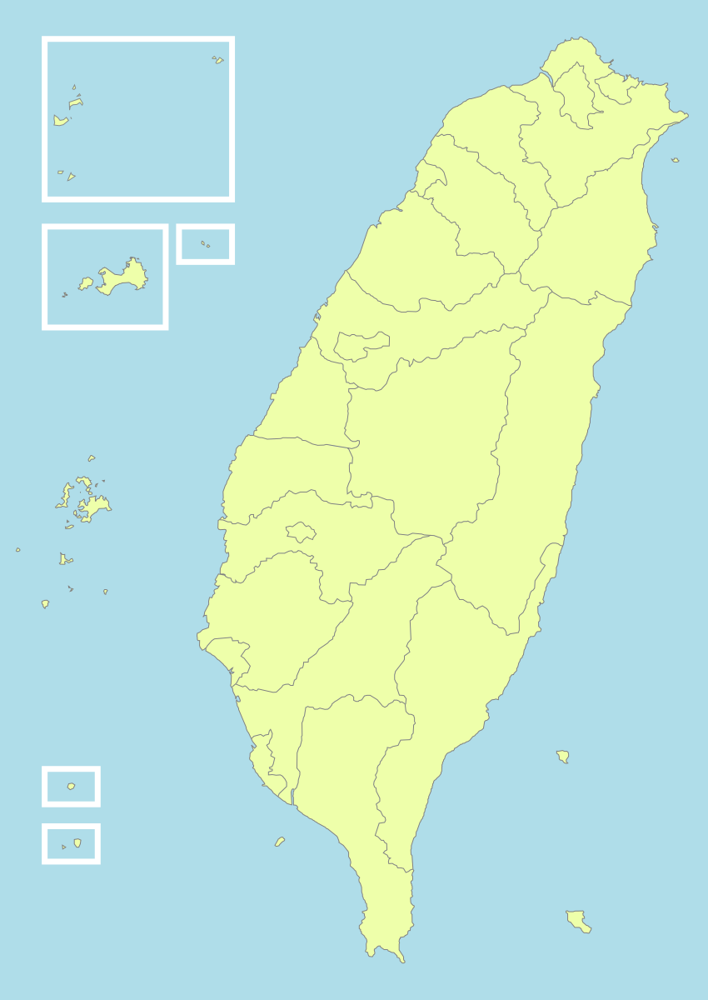

🗺️ 台灣農人足跡地圖
點選地圖標記或右側故事卡，同一頁立即顯示農場、作物、品牌故事與學習重點，不跳出其他地圖頁面。

此版本採用 SVG 概念式台灣地圖，不使用 Google Maps API，不產生地圖費用；重點放在農人故事與課堂引導。
📖 農人故事列表
可依照縣市或作物分類，引導學生觀察不同產地如何建立品牌。
課堂任務一：看見產地
請學生選擇一位農人，查詢該地區的氣候、土壤、主要作物與交通位置。
課堂任務二：看見品牌
分析這位農人的品牌特色：是品質、故事、友善耕作、加工產品，還是體驗活動？
課堂任務三：看見市場
思考這個農產品可以賣給誰？如何包裝？如何拍照？如何寫社群文案？